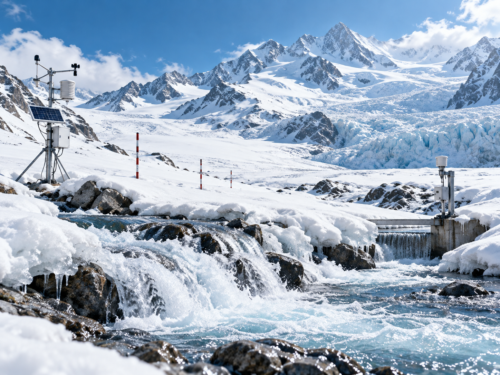
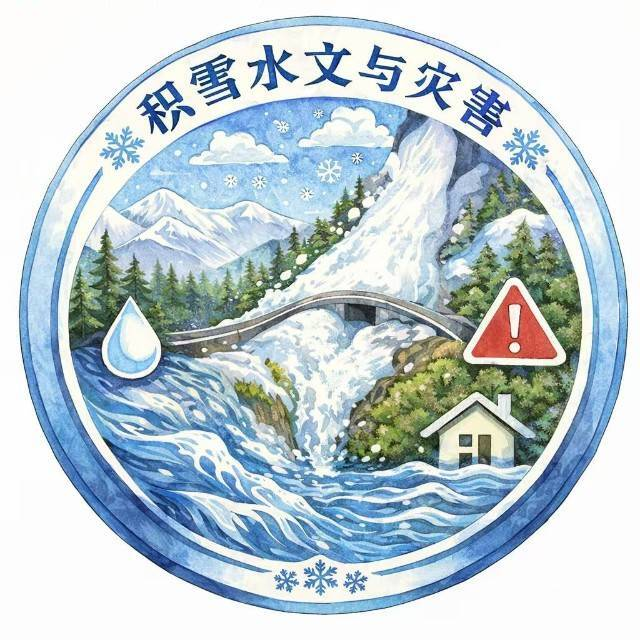
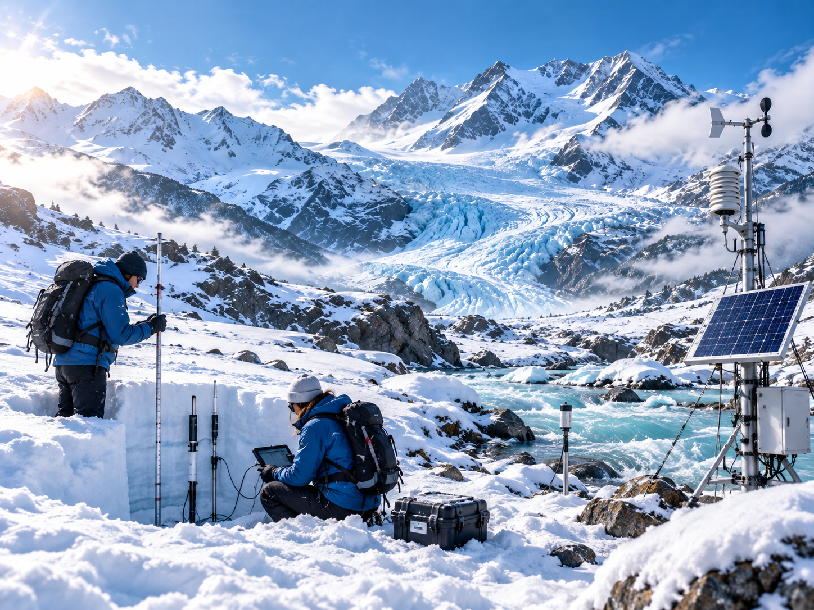

冰雪水文过程
研究积雪、冰川与融雪径流过程及其对流域水资源的影响。

COLD REGION HYDROLOGY AND HAZARDS RESEARCH GROUP
聚焦积雪、冰川、冻土、融雪径流、雪崩、冰湖溃决、 寒区洪水等典型问题。
融合野外观测、遥感反演、数值模拟与数据分析， 构建全过程研究体系。
依托野外监测、流域观测、遥感数据与模型平台， 开展多尺度过程诊断。
结合水文学、冰冻圈科学、灾害学与地理信息技术， 开展综合研究。

研究积雪、冰川与融雪径流过程及其对流域水资源的影响。

聚焦雪崩、冰湖溃决、寒区洪水等灾害的识别与动态监测。
开展寒区灾害风险评估、模拟预测与监测预警技术研究。
开展积雪剖面观测、冰雪水文监测、寒区样地调查与现场实验， 获取关键过程数据。
利用遥感、GIS 与地统计方法识别寒区地表过程与灾害特征， 提高区域监测能力。
结合水文模型、灾害模型与数据驱动方法， 开展风险预测与预警应用研究。
团队负责人 · 中国科学院地理科学与资源研究所
山地自然灾害与工程安全重点实验室
主要围绕土壤侵蚀与水土保持、流域水沙过程以及气候变化驱动下的山地灾害开展研究。 早期以水文模型与长序列观测资料为基础，在浙西寿昌江、闽江及泰国蒙河等流域 开展产沙模拟与水沙演变归因；近年来聚焦青藏高原东南缘，研究气候变化背景下 极端气候事件演变，以及山洪泥石流的水—土耦合过程与灾害风险防控。
团队由教师、博士研究生、硕士研究生及科研助理组成，长期从事寒区水文过程、 冰冻圈变化及灾害风险研究。主要方向包括积雪与融雪径流、冰川水文、 雪崩与冰雪灾害、遥感监测、风险评估与预警。
SCI 论文
中文核心论文
统计截至 2026 年 11 月，完整论文清单可向团队索取。